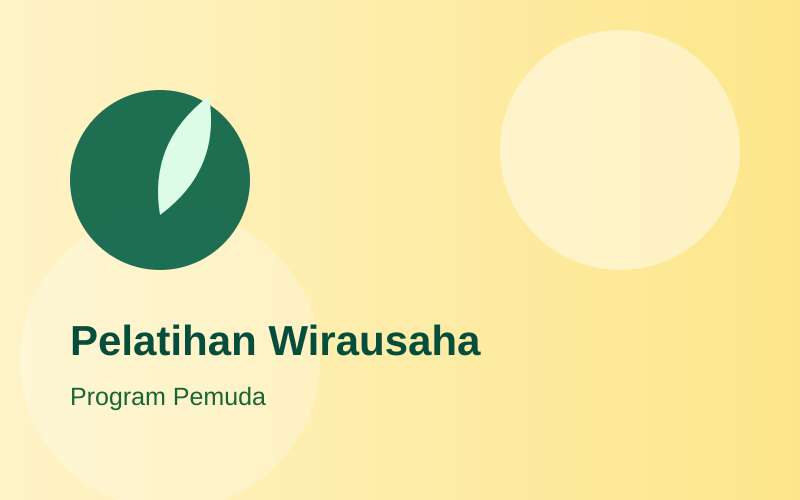
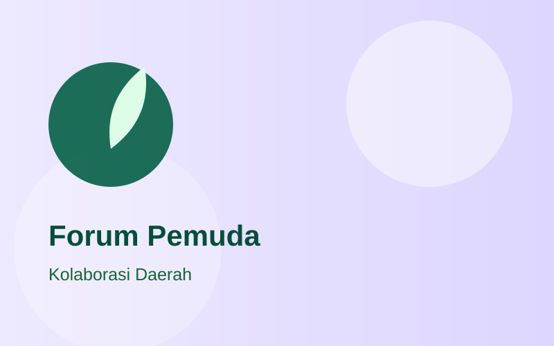
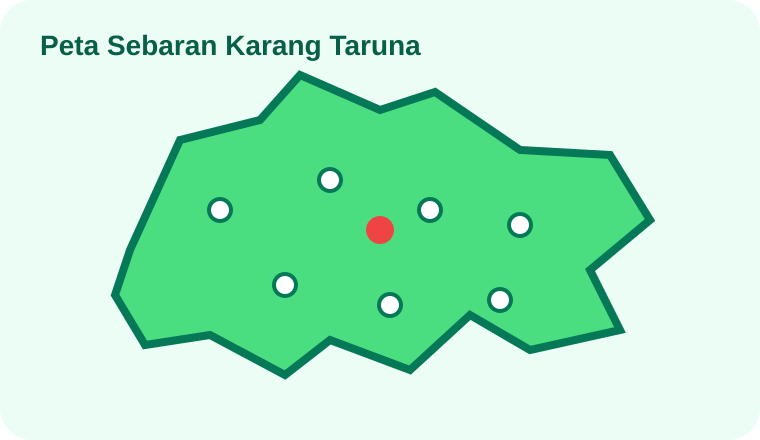

Kegiatan
12 April 2026
Karang Taruna Gelar Aksi Tanam 1.000 Pohon
Wujud kepedulian pemuda terhadap lingkungan dan masa depan yang lebih hijau.
Informasi terkini seputar kegiatan, program, dan kabar Karang Taruna Kabupaten Bandung.
Wujud kepedulian pemuda terhadap lingkungan dan masa depan yang lebih hijau.

Mendorong kemandirian ekonomi pemuda melalui pelatihan dan pendampingan usaha.

Pemuda hadir dan bergerak cepat untuk masyarakat yang membutuhkan.

Apresiasi bagi karya dan inovasi pemuda Kabupaten Bandung.
Program strategis pemberdayaan pemuda dan aksi nyata di masyarakat.
 Sosial
Sosial
Gerakan gotong royong tanggap bencana, santunan, dan solidaritas pemuda bagi masyarakat.
Lihat Jadwal & Detail Ekonomi
Ekonomi
Inkubasi usaha mandiri, pendampingan legalitas, serta akses permodalan bagi pemuda Bandung.
Lihat Jadwal & Detail
Lingkungan
Aksi penanaman pohon, edukasi pengelolaan sampah pemuda desa, dan konservasi alam.
Lihat Jadwal & Detail Digital
Digital
Bootcamp pemrograman, content creation, dan digital marketing untuk pemuda desa.
Lihat Jadwal & Detail
LeaderMencetak kader kepemimpinan pemuda yang kritis, adaptif, beretika, dan siap membangun daerah.
Lihat Jadwal & DetailInformasi kegiatan dan kabar aktual dari kecamatan se-Kabupaten Bandung.
Kolaborasi pemuda desa dalam memperluas jangkauan pasar produk lokal.
Respon cepat relawan muda membantu pemukiman warga yang terdampak genangan.
Edukasi lingkungan hidup dan pengembangan potensi ekowisata berbasis komunitas pemuda.
Pemberitahuan resmi, edaran, dan pendaftaran program pemuda.
Pendaftaran seleksi duta pemuda pelopor terbuka untuk pemuda/i usia 17-25 tahun ber-KTP Kabupaten Bandung.
Unduh Syarat & KetentuanPemberitahuan agenda konsolidasi kepengurusan dan pemilihan ketua karang taruna tingkat unit & desa.
Baca Surat EdaranKuota terbatas untuk 150 pemuda terpilih mengikuti sertifikasi gratis bidang IT & Multimedia.
Daftar SekarangJangan lewatkan kegiatan Karang Taruna.
Karya dan dedikasi pemuda yang membanggakan.

Tingkat Jawa Barat
Tingkat Provinsi
Kabupaten Bandung
Jangkauan Karang Taruna di seluruh wilayah Kabupaten Bandung.

Informasi yang sering ditanyakan seputar Karang Taruna.
Pemuda/i usia 13–45 tahun di wilayah Kabupaten Bandung dapat mendaftar langsung melalui pengurus Karang Taruna di tingkat RT/RW atau Desa/Kelurahan domisili setempat.
Ya, seluruh program pelatihan kerja, UMKM, dan sertifikasi talenta digital yang diselenggarakan Karang Taruna Kabupaten Bandung tidak dipungut biaya (100% Gratis).
Proposal dapat dikirimkan melalui email resmi info@karangtarunabandung.or.id atau langsung ke Sekretariat Karang Taruna di Jl. Al Fathu Soreang.
Sebagai wadah pembinaan generasi muda dalam penanganan masalah kesejahteraan sosial, pemberdayaan potensi ekonomi produktif, dan pelestarian lingkungan.